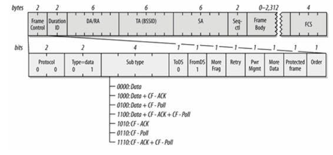
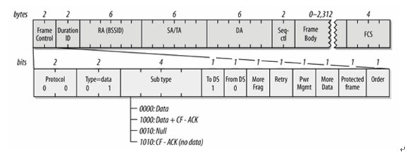

偶尔见识了一台无线监控设备的网络接入方式, 从而了解到了Smart Config技术
本文在于阐述我对Smart Config这一技术的理解
简述
简单来说, 这是一种让你可以在没有和其他设备(支持SmartConfig技术)建立任何性质的通讯链路的情况下, 配置该设备接入wifi网络
虚构一个实际场景的话, 会是这样:
你购买了一个带有wifi的摄像头, 不过这个摄像头没有usb, 没有以太网, 没有蓝牙, 没有nfc, gsm就更不可能了, 只有wifi, 那么问题来了:
你如何配置这个摄像头接入你家的wifi?
乍一想, 没有数据链路, 如何进行数据交换?
对的, SmartConfig就是用在这种场景下的, 如果这个摄像头的wifi支持SmartConfig技术, 那么你只需这样几个步骤
- 摄像头插上电源
- 安装制造商提供的手机app(应用无需任何特殊权限, 只需要手机当前是接入wifi的)
- 在摄像头附近打开app, 输入你家wifi的密码, 点击确认, 稍等片刻, 不出意外的话, 摄像头已经接入你家wifi了
这项技术由德州仪器提出, 并且应用在自己的CC3000系列芯片上. 不过, 从原理上来说, 支持混杂模式的wifi芯片都可以应用该技术
猜想
首先, 你可能会联想到是不是这个app控制了手机, 让手机主动接入摄像头的wifi网络, 然后交换数据. 这确实是一个行得通的办法, 但是却不实用, 控制操作系统更换当前的网络连接是敏感操作, 普通的app没这个权限, 那么就需要用户参与其中, 对于一般的用户而言, 这样的流程就显得复杂且难以理解了
这样看来, 摄像头并没有和你控制的任何一个设备建立任何性质的连接
一般来说, 我们潜意识里会默认通讯都是双向的, 以这个习惯来看待SmartConfig似乎觉得匪夷所思
其实, 在这种场景下, 我们只需要能够把wifi的名称和密码告诉摄像头就行了, 摄像头有没有回馈并不重要
顺着这个思路, 我们发现可以这么做, 手机app上生成一个包含wifi名称和密码的二维码, 然后放置在摄像头前, 摄像头只要识别了二维码自然就可以接入wifi
但是, 扫二维码的方式依赖视频信号输入, 并不是通用的手段(因为现实场景中的设备并不都是摄像头), 而且场景里也没有采用这种做法
这么分析下来, 传播wifi信息的渠道只可能是wifi本身了
摄像头尚未接入wifi, 况且wifi也是加密的, app并没有能力控制wifi的底层通讯, app又是如何将信息成功外泄给摄像头的?
共识
理解SmartConfig原理前需要说两个我总结的观点, 作为下文的共识
其一
我认为
无线数据的传播形式必定是广播
至少目前是这样, 因为我所知道的能做到点对点的无线传输只有量子隐形传输, 可惜还在实验室中
既然是广播, 那么必然可以被监听, 就像一个酒吧里有两个中国人和两个俄罗斯人, 中国人和中国人说话, 俄罗斯人听得到, 只不过听不懂, 反之亦然
其二
我认为
任何可控的模式都可以被用于编码, 用于数据交换
当前wifi应用的几种主流加密方式都存在一个特点, 明文的长度和加密后的密文长度之间是线性关系
即: 密文长度 = 明文长度 + 算法相关的常量C, 也就是说, 只要明文长度可控, 密文的长度即是可控的
这个特点是SmartConfig的核心原理
技术原理
如果了解802.11的帧格式, 你就知道, 链路层载荷数据(即网络层头部及网络层数)在数据帧中是清晰可辨的, 只要接收到802.11帧就可以立刻提取出载荷数据, 计算载荷数据的长度自不用说, 而这里的载荷数据, 通常就是密文
常见的两种数据帧格式:
Station to AP

AP to Station

密文长度有了, 接下来我们看一下明文的结构
普通权限的应用程序是没有能力完全控制和定义传输层及下层所有协议数据的, 唯一可以完全控制的就是应用层数据, 那就继续分析一下TCP/IP协议栈中的网络层和传输层的数据结构
常用的网络层协议非IPv4莫属, IPv4的头部绝大多数情况下都是定长的20字节, 长度几乎完全可控
传输层协议我们选择UDP, 因为UDP协议头部为定长的8字节, 完全可控(当然, 选择UDP还有别的原因)
这么看来, 我们有能力完全控制明文的长度
明文长度 = 20 + 8 + 应用层数据长度
密文长度也脱口而出
密文长度 = 20 + 8 + 应用层数据长度 + 算法相关的常量C
如果我需要你发出一个密文长度为1000字节的802.11帧, 那么你只需要在UDP中塞满任意(1000 - 20 - 8 - C)个字节即可
接下来, 只要我们利用可控的密文长度定义一张编码表即可将数据告诉任何知道这张编码表的设备了
原理说完了, 按照这个原理, 几乎可以实现任意数据的传播, 至于SmartConfig采用何种编码, 这个则是技术的实现细节, 本文不讨论
流程示例
为了示意一下整个过程, 我们简单定义一张编码表:
密文长度 => 映射释义
1234 => 起始符; 连续的3个起始符, 用于表示数据传输开始
1324 => 结束符; 连续的3个结束符, 用于表示数据传输结束
110 => 间隔符; 连续的2个间隔符, 用于表示数据符之间的间隔
1000 => 数据符; 表示 ASCII 0x00
1001 => 数据符; 表示 ASCII 0x01
…
1127 => 数据符; 表示 ASCII 0x7F
假设我们要把字符串”CJey”(密码)告诉摄像头, 整个流程大致如下: (假设常量C为16)
手机app部分:
- 打开手机app, 在输入框中填入要发送的字符串”CJey”, 点击发送
- app连续发送三个UDP广播包, 填充数据为1190个0x00字节(1234 - 16 - 20 - 8 = 1190), 表示传输开始
- app发送一个UDP广播包, 填充数据为1023个0x00字节(1067 - 16 -20 - 8 = 1023), 传输字符C
- app连续发送两个UDP广播包, 填充数据为66个0x00字节(110 - 16 - 20 - 8 = 66), 表示数据间隔
- app发送一个UDP广播包, 填充数据为1030个0x00字节(1074 - 16 -20 - 8 = 1030), 传输字符J
- app连续发送两个UDP广播包, 填充数据为66个0x00字节(110 - 16 - 20 - 8 = 66), 表示数据间隔
- app发送一个UDP广播包, 填充数据为1057个0x00字节(1101 - 16 -20 - 8 = 1057), 传输字符e
- app连续发送两个UDP广播包, 填充数据为66个0x00字节(110 - 16 - 20 - 8 = 66), 表示数据间隔
- app发送一个UDP广播包, 填充数据为1077个0x00字节(1121 - 16 -20 - 8 = 1077), 传输字符y
- app连续发送三个UDP广播包, 填充数据为1280个0x00字节(1324- 16 - 20 - 8 = 1280), 表示传输结束
- 从1开始循环多次, 直到超时或者摄像头成功接入wifi, 向app汇报成功
摄像头部分:
- 摄像头通电, 没有可用的wifi, 进入混杂模式, 开始监听信号覆盖范围内的所有wifi数据帧
- 捕获数据帧, 如果连续收到3个密文长度为1234, 且来自于同一个发射源X的数据帧, 则进入下一步, 否则重复2
- 捕获发射源X的数据帧, 持续捕获密文长度为110或者1000-1127之间的数据帧, 直到捕获到连续3个密文长度为1324的数据帧
- 将上述数据帧按照编码表进行映射, 由于手机app并非是独占网络, 所以捕获到的数据可能有噪音, 比如解码出来的结果可能是(/表示分隔符): ACX/J/o@e/ymmm
- 如果没有噪音, 记为候选数据RC, 重复捕获X, 进行二次验证, 通过则表示接收完成, 没通过也重复捕获X, 将这次所得结果同上一次做交集, 循环如此直到得出唯一结果, 即RC, 之后再重复5
- 由于捕获的数据帧头部信息中已经包含了wifi的bssid信息, 使用”CJey”作为密码去尝试连接相应的wifi, 成功则向app报告, 失败则继续重复2
参考
SmartConfig的TI官方wiki
SmartConfig的TI官方介绍
CC3000 Smart Config - transmitting SSID and keyphrase
How does TI CC3000 wifi smart config work?